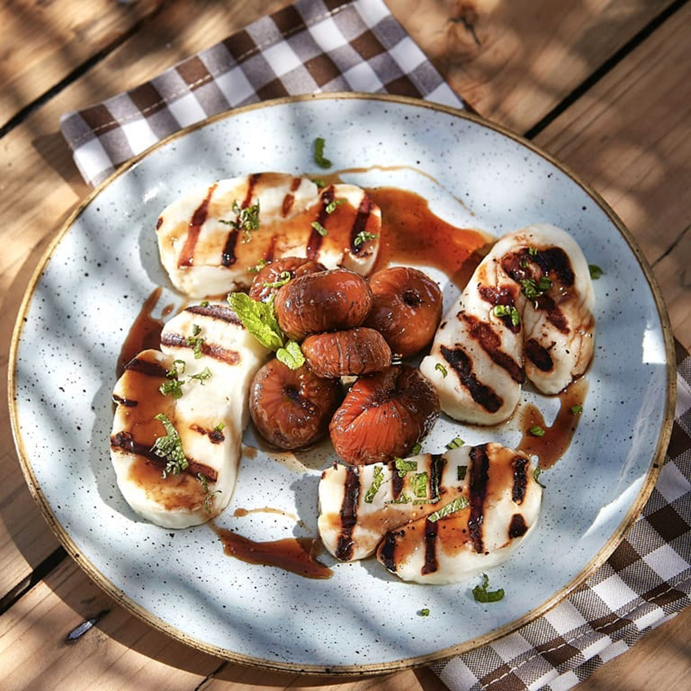
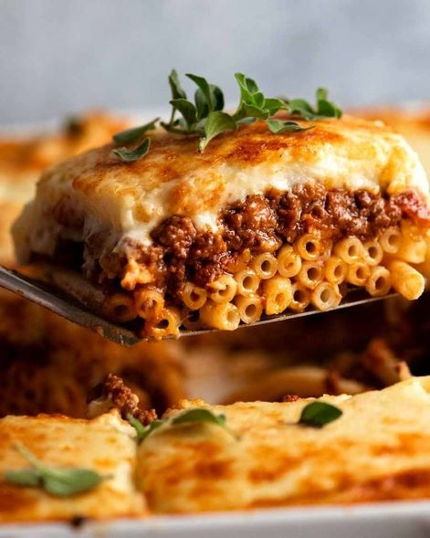

Let food be thy medicine and medicine be thy food.
— Hippocrates, 460-370 BC, Ancient Greek physician, the “Father of Medicine”

Famous cuisine in Greece

Pastitsio
Pastitsio is another traditional Greek dish that consists of baked layers of pasta, juicy minced beef, bechamel and tomato sauce, topped melted cheese.
The feta cheese is wrapped in layers of phyllo and after it's baked, some Greek honey is drizzled over it and it’s topped with a sprinkle of sesame seeds.
Bougatsa is a Greek breakfast dessert made with either semolina custard or cheese and wrapped in layers of crispy phyllo, a thin dough used in pastries.
An all-time favorite for all Greeks is Choriatiki salad, which is a must with almost every single meal. This Greek salad is made with cucumber, olives, tomatoes, and a big piece of feta cheese.